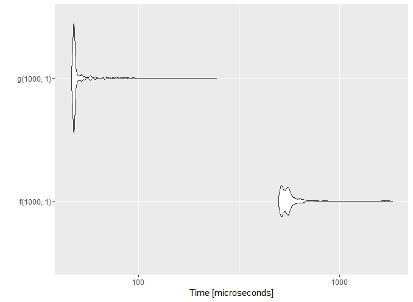
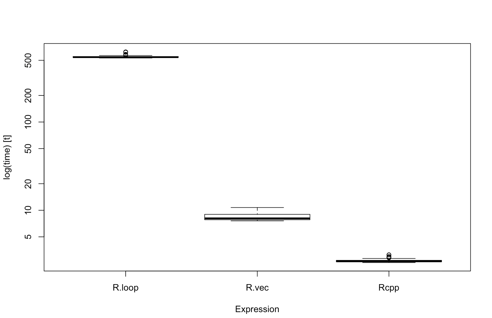

데이터 과학
R 스케일-업 성능향상
학습 목표
- R 스케일-업 전략을 통한 성능향상에 대해 살펴본다.
- 공짜 성능향상 전략은 존재하는가?
- 순수 R 코드 성능향상 방법을 살펴본다.
Rcpp를 통한 성능향상 방법도 살펴본다.
R 스케일-업 전략 개요
R 스케일-업(Scale-up) 성능향상 전략은 R의 강점을 최대한 유지시키면서 단점을 보안하는 전략이기도 하다. R 성능향상 전략은 크게 R코드를 직접적으로 변경하는 전략과 R코드 주변을 최적화하는 방법으로 나눌 수 있다.
R코드를 변경하지 않고도 컴파일러를 바꾸는 등의 최소한 노력으로 성능향상을 기대할 수 있다. 하지만, 그다지 높은 성능향상을 기대할 수는 없다. 두번째 전략은 루프를 돌리는 대신에 저장공간을 희생해서 고성능 R코드를 작성하는 것으로 벡터화(Vectorization) 로 알려진 방법으로 저장공간을 동적으로 요청해서 생성하는 대신에 미리 저장공간을 쭉 생성해 놓고 계산결과를 채워넣는 방식이다. 마지막 방법은 R 코드를 기본으로 작성하고 성능향상이 필요한 부분을 Rcpp 즉, C++의 힘을 빌어 C++로 작성한 것과 같은 고성능을 내는 방법이다.
- 공짜 성능향상: 컴파일러 선정, 바이트코드 컴파일러(compiler), BLAS 라이브러리 등
- 고성능 R코드 작성: 루프,
ply함수, 벡터화 - Rcpp: R코드 대신 성능이 필요한 부분을 C++ 코드로 작성
1. 공짜 성능향상
1.1. 하드웨어 체적화된 컴파일러
GNU gcc/gfortran과 clang/gfortran은 자유롭게 사용할 수 있어 어떤 것이나 컴파일하지만, 가장 속도가 빠른 바이너리 파일을 만들어낸다고 보장은 하지 못한다. 인텔 icc/ifort 컴파일러는 인텔 하드웨어를 사용하는 경우 훌륭한 대안이 되는데 인텔 하드웨어에 최적화되어서 icc 컴파일러를 사용하면 속도가 향상된다. 하지만, Intel Composer suite 를 사용할 경우 비용을 지불해야 한다.
1.2. 바이트코드 컴파일러 1
티어니 교수의 compiler 팩키지 cmpfun() 함수를 사용하면 경우에 따라서는 3~4배 성능을 끌어올릴 수 있다. R2.14 버전부터 내장 R함수에 사전 컴파일작업이 수행되어 특별한 성능향상이 기대되지 않지만, 수치연산과 다른 R함수를 많이 호출하지 않고, 자료형을 변환이 빈번하지 않는 함수에는 성능향상이 기대된다.
compiler 팩키지를 사용하게 되면 크기가 약간 커지고, 빌드과정에 시간이 다소 소요되지만, 다소 속도가 빨라지는 장점을 갖게 된다.
library(compiler)
f <- function(n, x) for (i in 1:n) x = (1 + x)^(-1)
g <- cmpfun(f)
disassemble(g)disassemble 함수로 바이트코드 컴파일 결과를 확인할 수 있다.
list(.Code, list(8L, LDCONST.OP, 1L, GETVAR.OP, 2L, COLON.OP,
3L, STARTFOR.OP, 0L, 4L, 24L, LDCONST.OP, 1L, GETVAR.OP,
5L, ADD.OP, 6L, LDCONST.OP, 7L, EXPT.OP, 8L, SETVAR.OP, 5L,
POP.OP, STEPFOR.OP, 11L, ENDFOR.OP, INVISIBLE.OP, RETURN.OP),
list(for (i in 1:n) x = (1 + x)^(-1), 1, n, 1:n, i, x, 1 +
x, -1, (1 + x)^(-1)))microbenchmark를 통해 비교를 \(\frac {1}{(1-x)^n}\) 함수를 람다식으로 계산한 R코드와 이를 바이트코드로 컴파일한 것의 성능차이를 비교한다.
library(microbenchmark)
compare <- microbenchmark(f(1000, 1), g(1000, 1), times = 1000)성능이 약 10 차이가 나는 것을 확인할 수 있다. 가장 잘 성능차이가 나는 사례를 들었기 때문에 이런 차이가 나는 것이지만, 보통은 약간의 성능향상만을 자주 관측하게 된다.
Unit: microseconds
expr min lq mean median uq max neval cld
f(1000, 1) 498.567 518.473 578.14138 548.020 570.569 1833.160 1000 b
g(1000, 1) 46.342 47.586 51.26195 47.898 49.142 244.152 1000 a 시각화 결과를 autoplot을 통해 도식화한다.
library(ggplot2)
autoplot(compare)
현실일 수도 있는 사례를 살펴본다. \(n \times n\) 정방행렬을 난수를 채워 생성하고 칼럼마다 합을 구하고 그 최소값을 구하는 함수를 바이트코드로 컴파일할 경우 성능은 별차이가 없는 것으로 나온다.
g <- function(n) {
x <- matrix(runif (n*n), nrow=n , ncol=n)
min(colSums(x))
}
g_comp <- cmpfun(g)
n <- 1000
benchmark(g(n), g_comp(n) , columns= c("test", "replications", "elapsed", "relative")) test replications elapsed relative
1 g(n) 100 10.39 1.000
2 g_comp(n) 100 10.41 1.0021.3. BLAS 선택 2
BLAS(Basic Linear Algebra Subprograms)는 기본선형대수를 구현한 모듈로 통계에서 가장 기반이 되는 프로그램이다. 다양한 BLAS 구현이 존재하고, 행렬분해(matrix factorization)를 비롯하여 선행대수 연산을 담당한다.
표준정규분포에서 나온 표본을 \(m \times n\) 행렬로 생성한 다음 svd 분해를 R에 기본 설치된 BLAS, OpenBLAS, ATLAS, 마이크로소프트에서 인수한 Revolution R에 포함된 BLAS 모듈로 각각 실행을 해보고 성능을 확인한다.
set.seed(1234)
m <- 2000
n <- 2000
x <- matrix(rnorm(m*n), m,n)
object.size (x)
benchmark(svd(x))BLAS 모듈에 대한 성능을 비교한 R코드에서 확인 가능하다. 결과는 R에 기본으로 설치된 BLAS가 가장 성능이 좋지 못하고 나머지는 유사하게 나오는 것으로 확인된다.
| R VERSION | FASTEST | SLOWEST | MEAN |
|---|---|---|---|
| Vanilla R | 63.65 | 66.21 | 64.61 |
| OpenBLAS R | 15.63 | 18.96 | 16.94 |
| ATLAS R | 16.92 | 21.57 | 18.24 |
| Revolution R | 14.96 | 16.08 | 15.49 |
1.4. 고성능 R코드 작성
동일한 기능을 수행하는 R코드를 성능 및 다른 품질속성을 고려하여 작성한다.
- 루프를 활용
- 데이터 초기화를 하지 않는 경우
- 데이터 초기화를 한 경우
ply, 즉 구문 설탕(Syntactic sugar)를 활용한다.- 벡터화를 활용한다.
정해진 횟수 예를 들어 50,000번 \(x\)를 \(x^2\)로 제곱하여 결과를 화면에 출력하는 R코드를 자료형을 초기화한 경우, 초기화하지 않은 경우, 구문에 달콤 기능을 넣은 ply, 그리고 메모리를 많이 사용하는 벡터화를 통해 동일한 기능을 구현한다.
##========================================================================
## 루프, ply, 벡터화
##========================================================================
#-------------------------------------------------------------------------
# 1. 자료형 초기화 설정을 하지 않는 경우
#-------------------------------------------------------------------------
square_loop_noinit <- function(n) {
x <- c()
for (i in 1:n) {
x <- c(x, i^2)
}
x
}
# square_loop_noinit(100)
#-------------------------------------------------------------------------
# 2. 자료형 초기화 설정을 한 경우
#-------------------------------------------------------------------------
square_loop_withinit <- function(n) {
x <- integer(n)
for(i in 1:n) {
x[i] <- i^2
}
x
}
# square_loop_withinit(100)
#-------------------------------------------------------------------------
# 3. ply 기능을 활용하여 구현한 경우
#-------------------------------------------------------------------------
square_sapply <- function(n) sapply (1:n , function(i) i^2)
# square_sapply(100)
#-------------------------------------------------------------------------
# 4. 벡터화를 통해 구현한 경우
#-------------------------------------------------------------------------
square_vec <- function(n) (1:n) * (1:n)
# square_vec(100)
#=========================================================================
# 5. 벡터화를 통해 구현한 경우
#=========================================================================
n <- 50000
benchmark(square_loop_noinit(n), square_loop_withinit(n) ,
square_sapply(n), square_vec(n),
columns= c("test", "replications", "elapsed", "relative")) 구현된 결과를 보면, 벡터화를 통한 것이 가장 좋은 성능을 보이고 있고, ply와 데이터 초기화를 한 경우 성능이 비슷하게 나오고, 전혀 초기화 설정을 하지 않는 것이 가장 성능이 낮은 것을 알 수 있다.
test replications elapsed relative
1 square_loop_noinit(n) 100 167.47 8373.5
2 square_loop_withinit(n) 100 3.56 178.0
3 square_sapply(n) 100 4.61 230.5
4 square_vec(n) 100 0.02 1.02. C++ Rcpp 사용
GPL 라이선스로 Rcpp, RcppArmadillo, RcppEigen 등이 Rcpp 생태계를 이루며 C++로 컴파일된 코드에 대한 R 인터페이스를 제공한다. Rcpp는 컴파일된 코드로 우선 속도가 빠르다. 설치와 사용이 상대적으로 쉽고, 저자가 직접 작성한 책도 있고 문서화도 잘되었고, 컴뮤니티도 건강하다. 그렇다고 해서 Rcpp만으로 C++를 몰라도, R에서 C++로 자동으로 변환되는 등 요술방망이는 아니다.
2.1. 몬테카를로 모의시험 \(\pi\) 계산 6
\(\pi\)를 계산하는 \([0,1] \times [0,1]\) 정사각형에 균등분포 관측점 \((x_i , y_i )\)을 임의 추출하여 원내부에 위치하는 관측점의 갯수를 기록해서 전체 임의추출한 표본 수자로 나눈다.
- 원내부에 위치한 점을 기록할 변수(
r)를 선언한다. - \(x\)축과 \(y\)축, 균등분포에서 \([0,1]\) 사이 난수를 뽑아낸다.
- \(x^2 + y^2 \leq 1\) 인지 판정한다.
- 만약 원 내부에 위치하면 앞에서 선언한 변수
r을 하나씩 증가시킨다. - 2,3,4번 과정을
n번 만큼 반복하고 결과를 \(4 \times \frac {r}{n}\) 를 반환한다.
\[ \pi \approx 4 \times \left( \frac{\mbox{원 내부}}{\mbox{전체}} \right) \]
##========================================================================
## Rcpp 원주율 계산
##========================================================================
#-------------------------------------------------------------------------
# 1. 순수한 R 코드
#-------------------------------------------------------------------------
pi_loop_r <- function (n){
r <- 0L
for (i in 1: n) {
u <- runif (1)
v <- runif (1)
if ( u ^2 + v ^2 <= 1)
r <- r + 1
}
return ( 4 * r / n )
}
#-------------------------------------------------------------------------
# 2. 벡터화 R 코드
#-------------------------------------------------------------------------
pi_vec_r <- function(n){
x <- matrix(runif(n*2), ncol=2)
r <- sum(rowSums(x^2) <= 1)
return(4 * r/n)
}
#-------------------------------------------------------------------------
# 3. Rcpp 코드
#-------------------------------------------------------------------------
code <- "
# include <Rcpp.h>
// [[Rcpp::export]]
double pi_rcpp(const int n)
{
int i, r = 0;
double u, v;
for (i =0; i < n; i ++) {
u = R::runif(0, 1);
v = R::runif(0, 1);
if(u*u + v*v <= 1)
r ++;
}
return ( double ) 4. * r / n ;
}"
# library (Rcpp)
sourceCpp(code = code)\(\pi\) 원주율을 for 루프를 사용해서 구현한 방법과 메모리를 희생하더라도 일단 쭉 메모리에 데이터를 깔고 원주율을 계산하는 벡터화 방법, Rcpp를 사용해서 구현한 세가지 코딩방법에 대한 기준성능을 벤치마킹하여 비교한다.
#-------------------------------------------------------------------------
# 4. 알고리듬 비교
#-------------------------------------------------------------------------
library(rbenchmark)
n <- 100000L
benchmark(R.loop = pi_loop_r(n),
R.vec = pi_vec_r(n) ,
Rcpp = pi_rcpp(n) ,
columns= c("test", "replications", "elapsed", "relative"))benchmark 성능비교 결과 Rcpp로 구현한 C++ 코드가 벡터화보다 3.8배, 루프를 돌린 것과 비교하여 204배 성능이 좋은 것이 확인된다.
test replications elapsed relative
1 R.loop 100 54.526 204.217
2 R.vec 100 1.016 3.805
3 Rcpp 100 0.267 1.000microbenchmark를 사용해서 시각화를 해도 확연한 성능차이를 시각화를 통해 확인된다.
#-------------------------------------------------------------------------
# 5. 시각화
#-------------------------------------------------------------------------
library(microbenchmark)
pi_bm_res <- microbenchmark(R.loop = pi_loop_r(n),
R.vec = pi_vec_r(n) ,
Rcpp = pi_rcpp(n), unit="s")
boxplot(pi_bm_res)
2.2. Rcpp 참고자료
- Rcpp 소품문: Rcpp - Seamless R and C++ Integration
- Advanced R, Hadley Wickham: High Performance Functions with Rcpp
- Seamless R and C++ Integration with Rcpp: Seamless R and C++ Integration with Rcpp